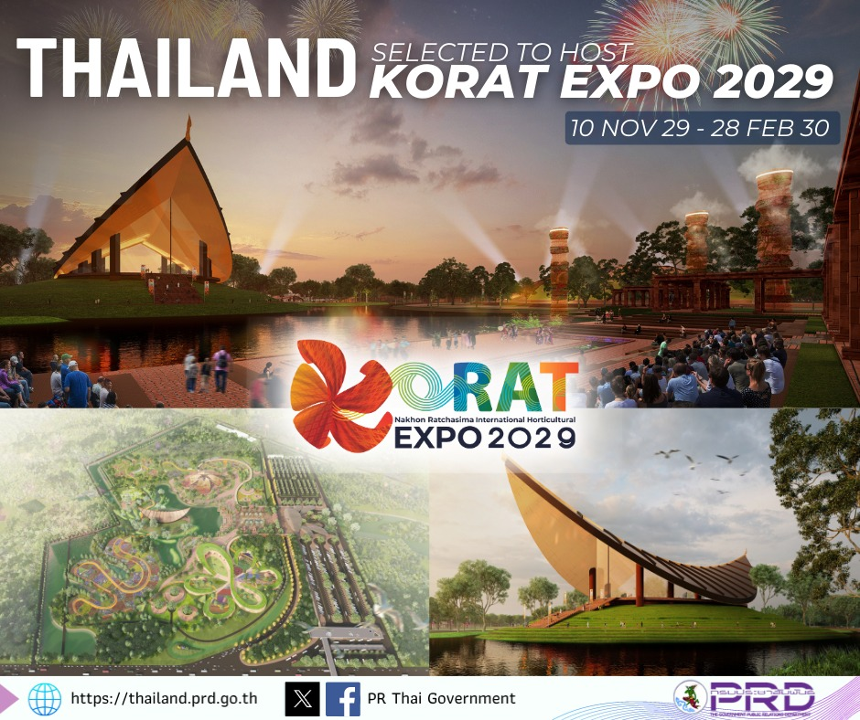

เนื่องมาจากทางสมาคมผู้ผลิตพืชสวนระหว่างประเทศ (AIPH) ได้อนุมัติสิทธิให้ประเทศไทย
ซึ่งเป็นผู้สมัครที่ลงทะเบียนแล้ว เป็นเจ้าภาพจัดงานมหกรรมพืชสวนนานาชาติ ประจำปี 2572 หรือ “Korat Expo 2029”
ซึ่งจะจัดขึ้นระหว่างวันที่ 10 พฤศจิกายน 2572 ถึงวันที่ 28 กุมภาพันธ์ 2573 ที่จังหวัดนครราชสีมา
บนพื้นที่สาธารณประโยชน์โคกหนองรังกา ตำบลเทพาลัย อำเภอคง จังหวัดนครราชสีมา
เนื้อที่ 678 ไร่ แบ่งเป็นพื้นที่จัดแสดง 523 ไร่ และพื้นที่จอดรถ 155 ไร่
Korat Expo 2029 เป็นงานมหกรรมพืชสวนโลกขนาดใหญ่ที่สุด ระดับ A1 หรือ World Horticultural Exhibition
ซึ่งจะจัดขึ้นตามแนวคิดหลัก Nature & Greenery: Envisioning the Green Future
ธรรมชาติและพรรณพืชเขียวขจีอนาคตแห่งโลกสีเขียว
ซึ่งการได้รับสิทธิ์เป็นเจ้าภาพจัดงานระดับโลกครั้งนี้จะช่วยยกระดับจังหวัดนครราชสีมาให้เป็นศูนย์กลางด้านนวัตกรรม
และความยั่งยืนในอุตสาหกรรมพืชสวน

1.โซนสวนนานาชาติ 30 ประเทศ
2.โซน Main Pavillion (ศาลาการแสดง) ที่จะนำเสนอในส่วนของเมล็ดพันธุ์ข้าว ซึ่งเป็นอัตลักษณ์ของชาวอีสาน
3.โซนสุดท้ายคือสวนไทย